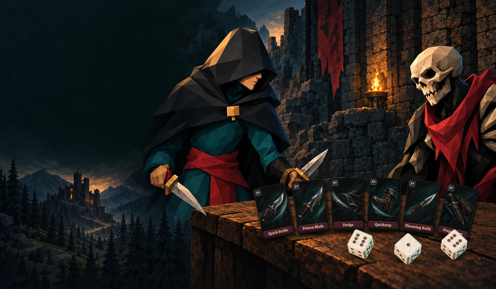
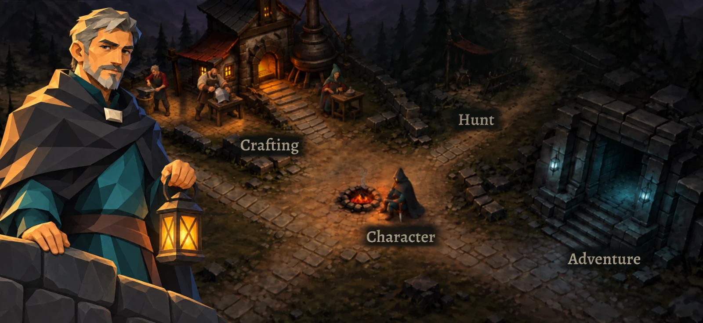
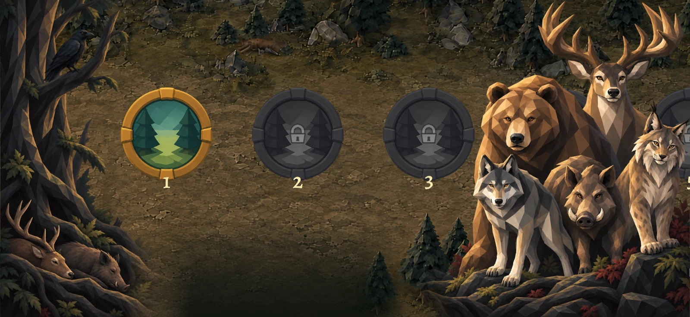
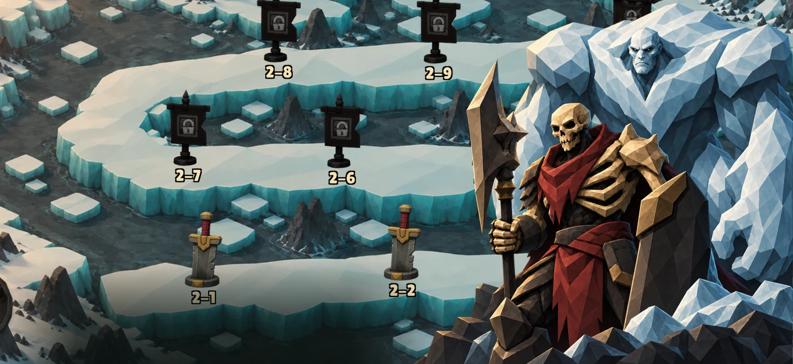
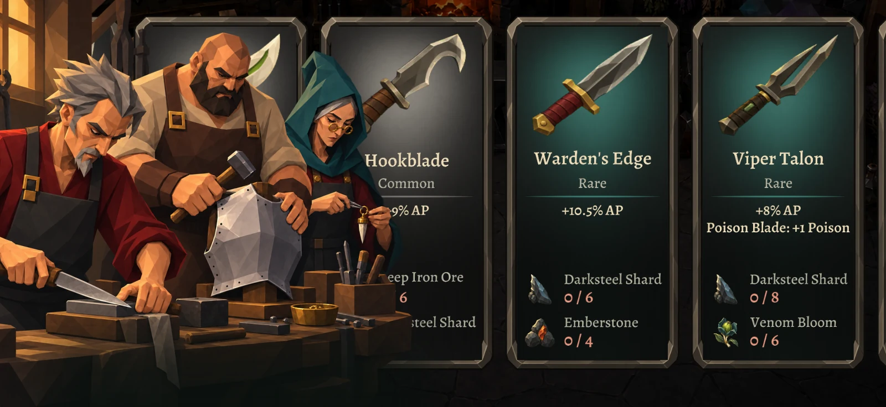
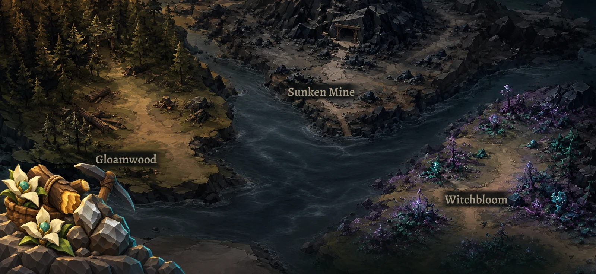

Zarlarla şekillenen bir RPG
Her zarbir karar.
Zarlarını seç. Becerilerini kullan. Karanlık bir fantastik dünyada kendi yolunu çiz.
Oyunu keşfet
Maceranın her adımı sana ait.

Maceraya hazırlan.
Kasabaya dön, karakterini güçlendir ve sıradaki maceran için hazırlık yap.

Yabanın izini sür.
Ormanın yaratıklarıyla karşılaş ve her mücadelede güçlen.

Zorlu bossları yen.
Yıkık kalelerden donmuş topraklara, karşılaşmalarla dolu bir yolculuğa çık.

Üret. Güçlen.
Topladığın malzemeleri silahlara, zırhlara ve tılsımlara dönüştür.

Kaynaklarını topla.
Toplama etkinlikleri başlat ve bir sonraki üretimin için malzemeler biriktir.